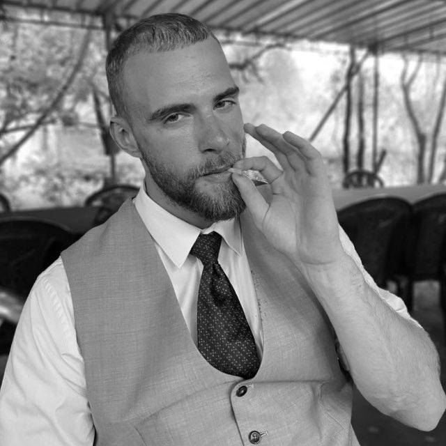
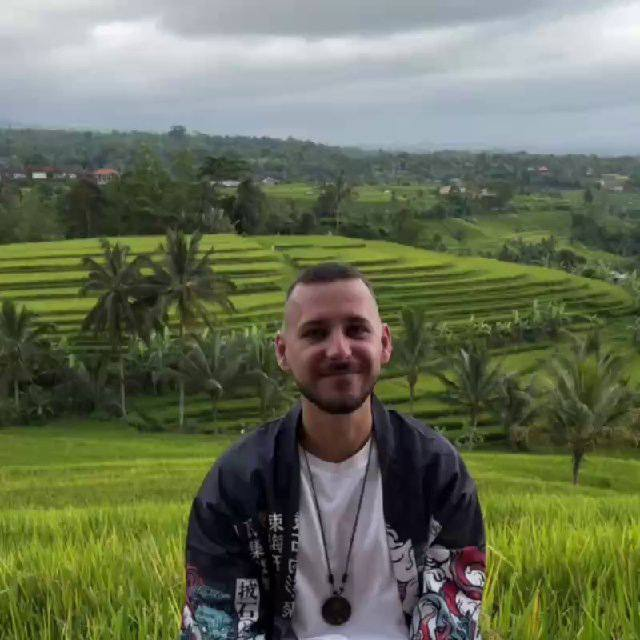
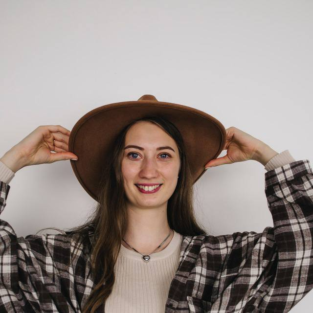

Служение, где из человека — даже в самом начале пути с Богом — вырастает служитель, а затем лидер. Через ответственность, команду и гостеприимство.
«От домостроителей же требуется, чтобы каждый оказался верным»
1 Коринфянам 4:2Суть
Даже если человек только начинает свой путь в Боге, но уже хочет зайти в ученичество — тренировать в себе качества христианина и служителя церкви — ашерское служение воспитает в нём всё необходимое. Здесь мечта стать лидером горницы превращается в понятный путь. А если человек об этом ещё не знает — семя служения будет заложено и прорастёт. И здесь же раскрываются таланты человека — служение помогает найти и проявить то, чем его одарил Бог.
Преданность своему служению и его результату.
Ответственный в малом — ответственный во многом.
Умение служить и достигать результата вместе.
Кто взрастит ученика «по печенью» — научится взращивать и ученика Христа.
Система
Лидер ашерского служения готовит двух заместителей — чтобы кто-то из них в будущем взял ответственность за всё служение. У каждого заместителя своя ашерская хеврута из 2–3 человек, в которых он воспроизводит себя. А каждый из хевруты ведёт своё подразделение из 5–10 человек. Это те, с кем служат, дружат и вместе несут ответственность за результат.



Охват
Ашерское служение сопровождает жизнь церкви — от горниц в малых группах до международных конференций.
Принцип воспроизводства
Ашерское служение — стартовая площадка для будущих служителей. Здесь формируется сердце служителя: человек берёт ответственность в малом, растит вокруг себя людей, а они растят следующих. Так работает полноценный принцип воспроизводства.
Формируется в малом
Воспроизводит себя
Они растят следующих
Четыре принципа
Внутри ашерского служения в человека закладываются четыре принципа, на которых держится зрелый служитель и лидер.
Как закваска квасит всё тесто, так семя служения, заложенное в сердце, прорастает в служителя. Внутри рождается сердце, готовое к евангелизации, и понимание: даже стакан воды, поданный служителю, засчитывается в Царстве Божьем.
В трудностях, дедлайнах и непредсказуемости ашерского служения человек учится пускать корни глубоко — опираться на фундаментальные послания и Божьи ценности, а не на обстоятельства. Устойчивость рождается там, где корень уходит вглубь.
Служение работает как единое тело: каждый знает свою функцию и своё место. Так рождается слаженность, без которой не провести большие мероприятия церкви. Один не заменяет всех — но каждый незаменим.
Ашер видит всю церковь: как служения работают во взаимозависимости, влияя на её рост. Важно быть не изолированным в своём служении, а видеть общую картину. Поняв это, человек сможет поставить служение и в другом городе, где окажется.
Путь роста
Проходя все стадии ашерского служения — параллельно с капсулой креста и десятью письмами — человек точно понимает, как строится команда, служение и горница. Тот, кто взял ответственность за подразделение из 5–10 человек, повторит это и в горнице — и намного легче воспитает ученика, готового служить Господу.
Основание в Писании
Человек, проходя этот путь, смирён: он понимает принцип «выше, ниже, наравне». Он учится, что верного в малом Господь поставит над большим — и что в этом малом нужно научиться быть лидером служения.
«И что слышал от меня при многих свидетелях, то передай верным людям, которые были бы способны и других научить».
2 Тимофею 2:2«Верный в малом и во многом верен, а неверный в малом неверен и во многом».
Луки 16:10«В малом ты был верен, над многим тебя поставлю; войди в радость господина твоего».
Матфея 25:21Внутри ашерского служения человек вырастает до полноценно готового лидера. Он знает, как строится команда, служение и горница — и несёт это дальше, воспроизводя себя в других.